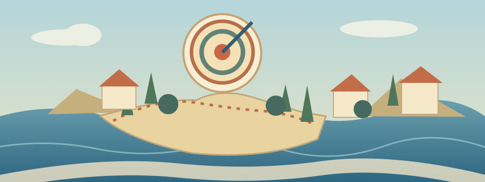

OCTOBER 13, 2026 · 30 MIN
Focus Under Pressure

From outcome-worry to the next useful action.
Listening · 6 min
VOA Learning English · Negative Self-Talk Can Hurt You2019 report · original recording 6:46 · listen to the opening 3:30
Direct audio · Transcript · Source page
Listening task
Listen without text. Find the first lost contrast or cause, replay only that sentence, then explain the report from memory. A personal story does not establish a universal result.
Reading · 9 min
Stanford Report · How elite athletes handle performance pressureRead the sections on strategies, focus cues, everyday applications and misconceptions. Rebuild the article's structure without looking.
Which cue directs attention to a specific action?
Choose before revealing feedback.
Reading task
Identify context → problem → strategy → example → transfer → qualification. Distinguish expert advice from experimental proof. Transfer a cue from basketball to English reading.
Active language · 4 min
Don't ______ worrying about the result.
Meaning
Become absorbed in a thought or detail. Transfer: I get caught up in debugging details.
______ the next step.
Meaning
Bring attention back to a chosen task. Transfer: Refocus attention on the main claim.
Review: rather than · Rather than watching the score, focus on the next pass.
Pronunciation
Rather than GET caught UP in the SCORE / REfocus your atTENtion / on the NEXT MOVE.
Speaking · 4 min
- Why might a free throw or exam feel important?
- How is worrying about results different from focusing on an action?
- Give one verbal and one visual focus cue.
- Transfer a cue to reading or debugging.
- What evidence would show whether a routine helps students?
Writing · 5 min
Should universities teach a short focus routine before exams, alongside subject knowledge?
Write 80–120 words. Give a specific example, a benefit, a limitation and evidence you would test.
Structure hint · open after drafting
Position → example → possible benefit → limitation → evidence.
Review · 2 min
Rebuild the chain without looking. Retrieve both expressions from Chinese, then transfer one to a new situation. Record your real answers in the Markdown note.
8-minute busy version
2 min listening → 3 min reading → 1 min speaking → 1 min retrieval → 1 min micro-writing (a routine plus one limitation).